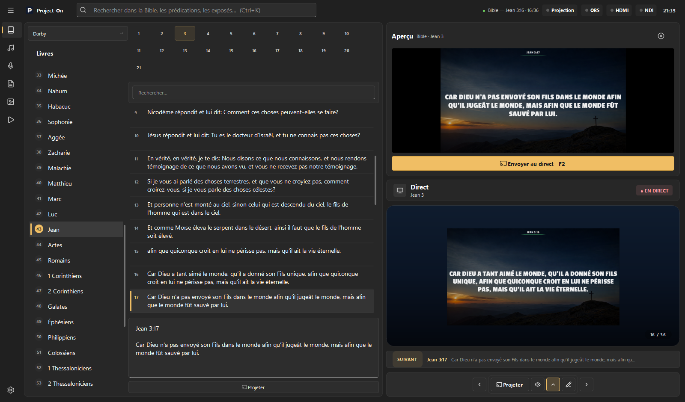
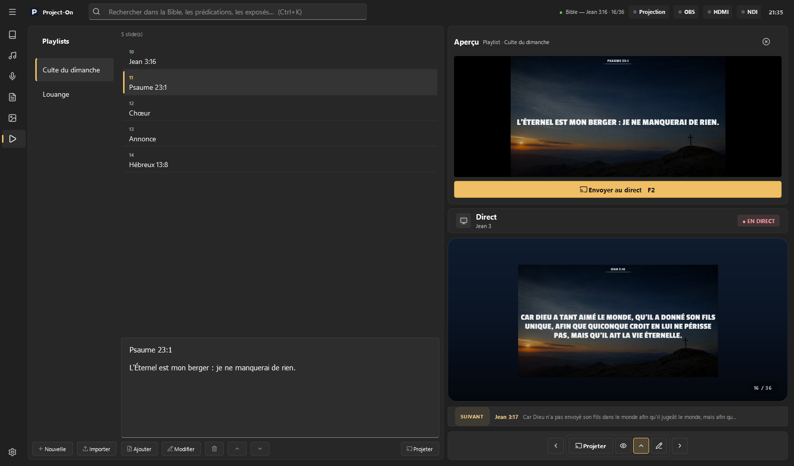
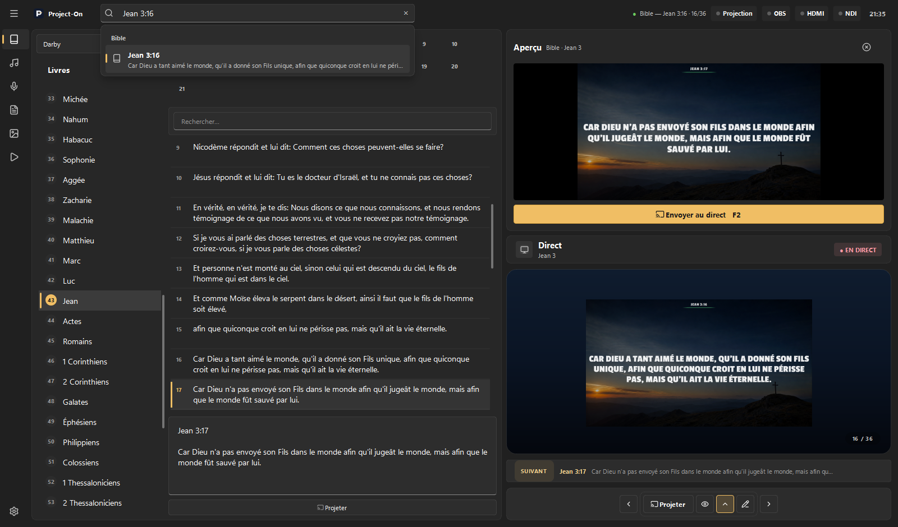
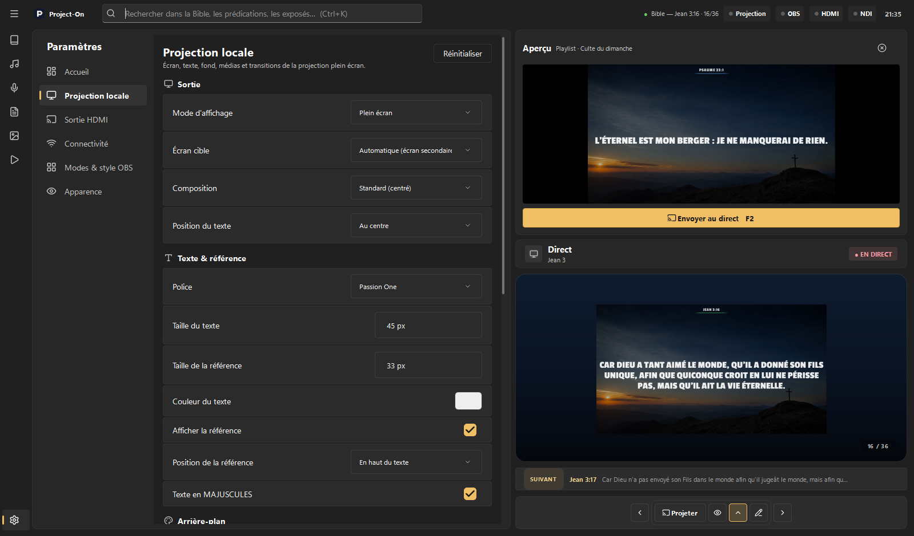
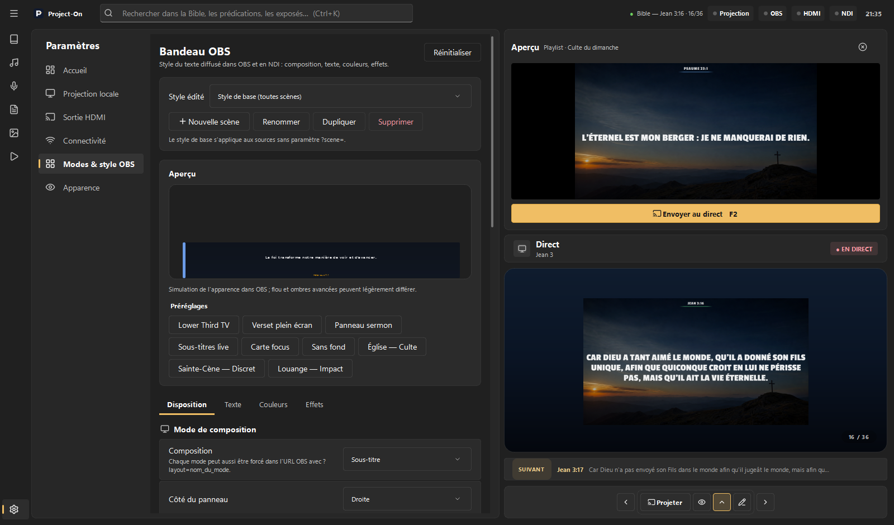

Grand, net, lisible
Plein écran sur le second écran ou le vidéoprojecteur, taille de texte constante, transitions sobres, fonds lisibles.
Nouveau Version 2.6.1 · Windows 10 / 11
Project-On réunit la Bible, les cantiques, les prédications, les livres et vos médias dans une régie pensée pour le culte. Un clic prépare, F2 envoie à l’assemblée : rien ne part plus à l’écran par erreur.

Démo en 40 secondes
Filmé dans la vraie application : préparer, envoyer au Direct, chercher, parcourir les bibliothèques, régler.
Nouveautés de la 2.6
Aperçu & Direct
Un verset, une strophe, un paragraphe ou un média s’affiche dans l’Aperçu, avec le rendu exact de la projection.
Exactement ce qui a été préparé, même si vous avez changé de chapitre entre-temps. Le double-clic projette toujours tout de suite.
Le bandeau « Suivant » montre ce qui vient. Le voyant indique ● EN DIRECT, masqué ou vide.


Recherche globale
Ctrl+K depuis n’importe où. Les premiers résultats arrivent en moins de 0,2 s, groupés : Bible, prédications, livres, médias, playlists. Un verset arrive déjà prêt dans l’Aperçu.
Bibliothèque intégrée
Six bibliothèques, la même logique : on choisit à gauche, on prépare à droite.
Navigation par livre et par chapitre, plusieurs traductions, recherche instantanée. Le verset part avec sa référence.
Quatre sorties, une seule régie
Plein écran sur le second écran ou le vidéoprojecteur, taille de texte constante, transitions sobres, fonds lisibles.
Une source Navigateur 1920 × 1080 à fond transparent, cinq compositions et un style par scène.
Sortie mixeur avec incrustation par couleur de clé, mire de calibrage et bandeau fidèle à OBS.
Le même rendu envoyé en NDI, vidéo comprise, sans décoder le fichier une fois de plus.
Compositions OBS
Un bandeau broadcast lisible qui laisse l’image principale respirer.

Réglages & thèmes
Chaque changement s’applique et s’enregistre aussitôt, sans bouton. L’Aperçu et le Direct restent visibles pendant que vous réglez.



Project-On 2.6.1
L’installeur se met à jour par-dessus la version précédente : cantiques, playlists, réglages et base sont conservés. La version portable démarre sans installation.
Windows 10 / 11 · 64 bits · environ 420 Mo · Toutes les versions · Windows bloque le fichier ? Voir l’aide
Aide à l’installation
SmartScreen et le « Contrôle intelligent des applications » de Windows 11 se méfient des logiciels encore peu téléchargés. Project-On est gratuit et son code est public.
Informations complémentaires,
puis Exécuter quand même.
ProjectOn_2.6.1_Setup.exe →
Propriétés → cochez Débloquer en bas → OK, puis relancez l’installation.
Installer le certificat… → Utilisateur actuel →
Autorités de certification racines de confiance. Windows reconnaîtra alors
l’éditeur Elie Nyembo / Project-On sur les versions signées.
Si le Contrôle intelligent des applications bloque encore : Sécurité Windows → Contrôle des applications et du navigateur → Paramètres du contrôle intelligent des applications. Ce réglage Windows est définitif ; il ne concerne que les PC où il est actif.